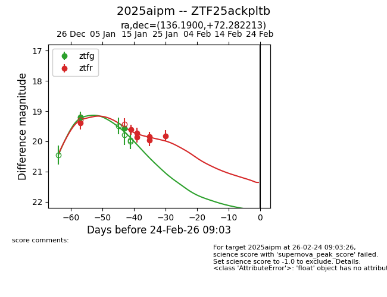
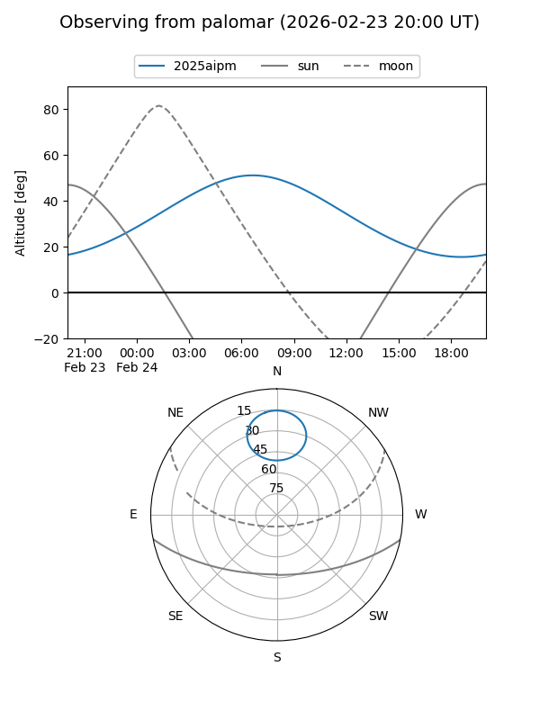
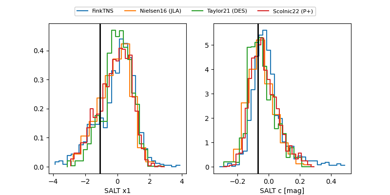

2025aipm
Target 2025aipm at 2026-01-09 12:49
Aliases and brokers:
FINK: link
Lasair: link
ALeRCE: link
TNS: link
YSE: link
alt names
ZTF25ackpltb (ztf,fink_ztf)
2025aipm (tns,yse)
Coordinates:
equatorial (ra, dec) = 136.1900,+72.28221
equatorial (HMS+DMS) = 09:04:45.60,+72:16:55.97
galactic (l, b) = (141.1726,+35.67437)
Flags:
Photometry:
last ztfg=19.20, ztfr=19.39
1 ztfg, 1 ztfr detections
Lightcurve

Visibility


Additional plots
